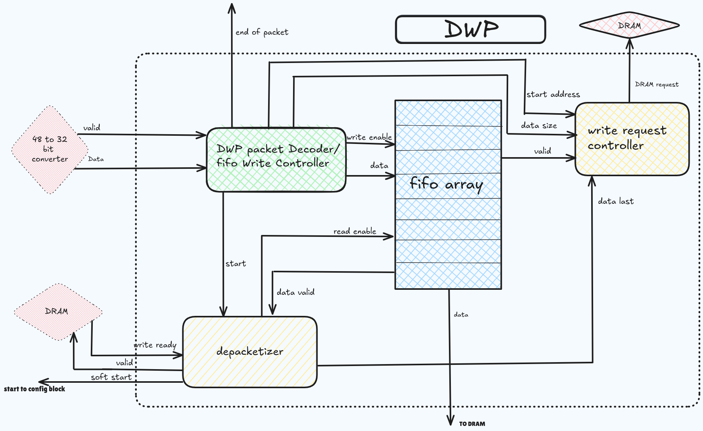

DRAM write protocol¶
Packet Decoding and FIFO Queuing
Process begins with the DWP Packet Decoder, which depacketizes the incoming data received from the CPU. The incoming data is initially encapsulated in a protocol-specific packet format. The decoder extracts the raw data payload, along with critical metadata such as the starting address and the size of the data. This depacketized data is then forwarded to a FIFO (First-In-First-Out) Queue, which temporarily stores it for orderly processing. The FIFO queue acts as a buffer, ensuring a smooth and sequential flow of data for subsequent write operations.
Write Request Control
address and size information extracted during depacketization is sent to the Write Request Controller. This controller orchestrates the writing of data to DRAM, ensuring that the write operations commence at the specified starting address and continue until the last packet is received. The write request controller monitors the FIFO data valid and issue write requests to the DRAM.
De-packetizer
As the depacketizer processes data packets,the configuration block receives valid signals to initiate configuration processes via a valid-ready handshake mechanism of DRAM.
{kind=link}
